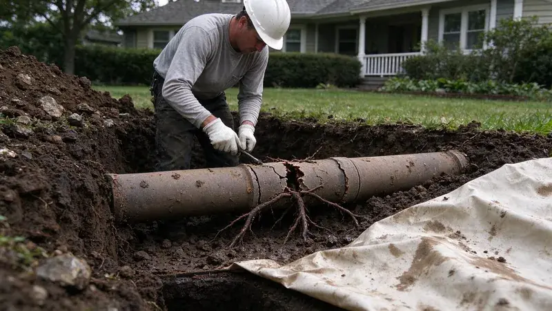

The pipes you never see do some of the hardest work in the house. The water service line runs from the meter to the house, usually 3/4 or 1 inch pipe buried below the frost line. A sewer lateral carries everything from the drains out to the city main or the septic tank. Both sit several feet underground, and either one can fail with very little warning. These days a repair rarely means digging up the lawn from one end to the other.
What Damages Buried Pipes in Hawaii
Tree roots cause more sewer trouble than anything else. Willows and silver maples are the worst offenders, though plenty of ornamental trees go after sewer lines too. A hairline crack or loose joint leaks warm, nutrient-rich vapor, and the roots follow it right in. Inside, they grow into a mat that snags waste and can eventually split the pipe.
Some valleys and lowland areas have clay-rich soil that swells with heavy rain and can stress slabs, foundations, and buried pipes.
Soil movement does damage slowly. Expansive clay swells in wet weather and shrinks in dry spells, while rock holds firm and creates pressure points. Over years that cycle shifts joints and cracks rigid pipe, leaving sags, which plumbers call bellies, where waste sits and builds up. Heavy trucks parked over a shallow line and poor bedding during construction make it worse.
Pipe material matters as well. In older neighborhoods it is common to find the original clay tile or cast iron sewer still in the ground. Some houses also have galvanized steel water service lines that rust from the inside out. ABS and PVC, standard from the 1970s onward, will not rust, though they still crack and separate at the joints.
Copper was the standard for many years, while newer homes and remodels in Hawaii increasingly use PEX, which resists corrosion from salt air.
Warning Signs of Underground Pipe Damage
Buried pipe problems show up indirectly, through other fixtures. Watch for these:
- Repeat backups in more than one fixture, usually the lowest toilet or shower in the house.
- A gurgling toilet when the washing machine drains.
- Sewer smell in the yard or around a cleanout.
- A green or soggy strip of lawn that stays green when everything around it is brown.
- Sinkholes or depressions along the path of the line.
- A water meter that keeps moving with every fixture off, pointing to a service line leak.
- Low water pressure through the whole house.
Modern Repair Methods
Diagnosis comes first. On the sewer side, a waterproof camera goes in at the cleanout and records every foot of pipe out to the main. The footage shows roots, cracks, offsets and bellies, and a locator at the camera head marks the depth and location of each one from the surface. On a water service line, we pressure test it and listen with acoustic gear to find the leak.
Cured-in-place lining slides a resin-soaked felt liner into the old sewer, inflates it and lets it cure into a new jointless pipe inside the old one. On a 4 inch lateral, the cured liner takes up very little of the inside diameter, and it flows better than rough cast iron did. It seals cracks and root entry points and usually needs only the cleanout for access. Pipe bursting pulls new HDPE through the line while a cone-shaped head breaks the old pipe outward. Bursting is the choice when the old pipe has collapsed or is too broken to hold a liner. Spot repair means digging up one section to replace a single broken joint or belly. For water service, directional boring runs a new line from meter to house with a small pit at each end.
Cost comes down to footage and depth. Expect $150 to $400 for the camera inspection itself. Spot sewer repairs often land between $1,500 and $4,500, trenchless lining or bursting of a full residential lateral commonly runs about $4,000 to $12,000, and a new water service line is roughly $1,500 to $5,000. Trenchless is not always cheaper per foot than an excavator, but you are not paying to rebuild the driveway and the pavers afterward.
When to Call a Professional
Drains that keep backing up, or a meter showing a leak you cannot find, call for a professional inspection. Most underground jobs need a permit and an 811 utility locate, plus careful digging around gas and sprinkler lines. HKL Plumbing uses sewer cameras, leak detection gear and trenchless methods to fix buried pipe with as little digging as possible, often just one pit at the cleanout. Call (808) 649-6718 to book an inspection. We walk you through the footage and give you each repair option with a price.
Need a licensed plumber in Hawaii?
HKL Plumbing answers 24/7 and offers same-day service across Hawaii.